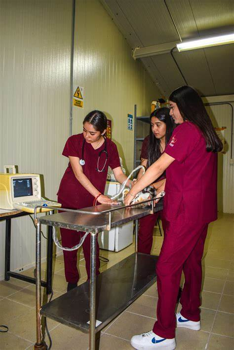

üë©‚Äç‚öïÔ∏è Lista de veterinarios y especialistas:
- Dr. Juan Pérez: Especialidad en ortopedia veterinaria con 15 años de experiencia.
- Dra. María López: Experta en dermatología animal y medicina felina.
- Dr. Carlos Gómez: Cirujano veterinario con enfoque en emergencias.
ü©∫ Servicios disponibles:
- Consultas generales y de especialidad.
- Vacunación y desparasitación.
- Cirugías y hospitalización.
üõí Productos recomendados:
- Venta de alimentos.
- Farmacia veterinaria.
- Productos de higiene y cuidado.
üè° Directorio de refugios y adopci√≥n:
- Refugio "Amigos Peludos": Asociaciones de rescate animal.
- Refugio "Colitas Felices": Información sobre adopciones y requisitos.
üö® Emergencias y contacto rápido:
- Teléfono de urgencia veterinaria: +52 (554) 123 4567.
- Hospital Veterinario Chihuahua: Ubicación abierta las 24 horas.
üêæ Gu√≠a de razas y cuidados:
- Información sobre razas de perros y gatos.
- Cuidados especiales según la especie.
üíá Peluquer√≠a y est√©tica canina:
- Servicios de baño, corte y estética.
